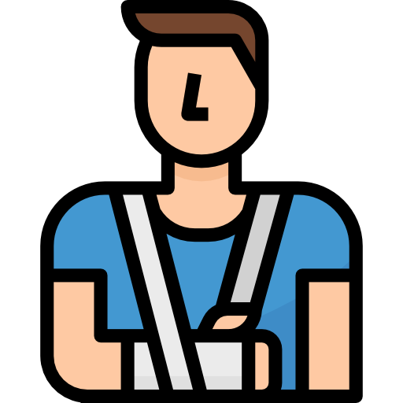
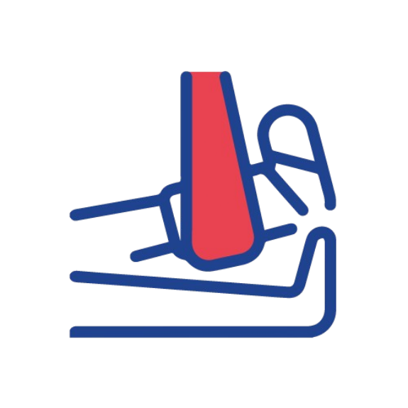

Fracture First Aid
Essential Steps to Remember
This video demonstrates how to assist someone with a possible fracture.
A video from: "How to Give First Aid and Treat a Fracture" by LIFESAVER on YouTube

1. Keep the injured person still
Limit movement to avoid further injury. Do not attempt to straighten the limb.
Panatilihing hindi gagalaw ang nasugatan. Iwasan ang paggalaw upang maiwasan ang mas
malalang pinsala. Huwag subukang ituwid ang nabaling bahagi.
2. Immobilize the injured area
Use a splint or padding to stabilize the area. Tie gently with cloth strips or bandages.
I-immobilize ang nasugatang bahagi. Gumamit ng splint o malambot na panakip upang
patatagin ito. Itali ng dahan-dahan gamit ang tela o benda.
3. Apply a cold compress
Use a cold compress or a cold pack wrapped in cloth to reduce swelling and pain.
Maglagay ng malamig na pomento. Gumamit ng yelo o malamig na pomento na binalot sa
tela upang mabawasan ang pamamaga at sakit.

4. Elevate if possible
Raise the injured area slightly if it doesn't cause pain or further harm.
Itaas kung maaari. Bahagyang itaas ang nasugatang bahagi kung hindi ito magdudulot ng
sakit o dagdag na pinsala.

5. Seek professional medical help
Call emergency services or go to the hospital immediately for treatment.
Humingi ng propesyonal na medikal na tulong. Tumawag agad sa emergency services o
pumunta sa ospital para sa paggamot.